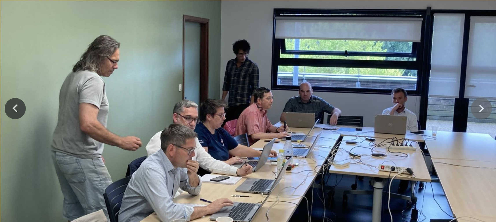
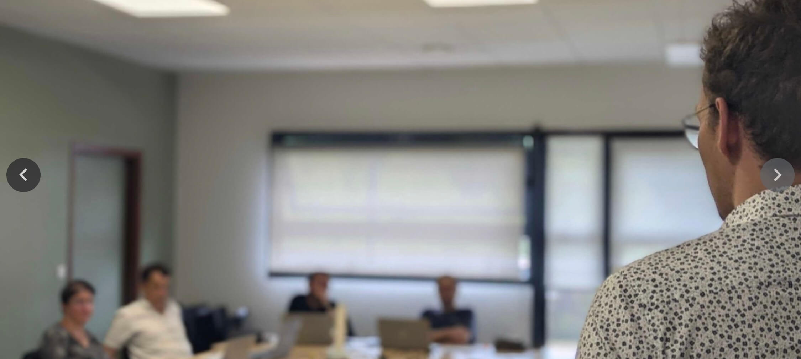
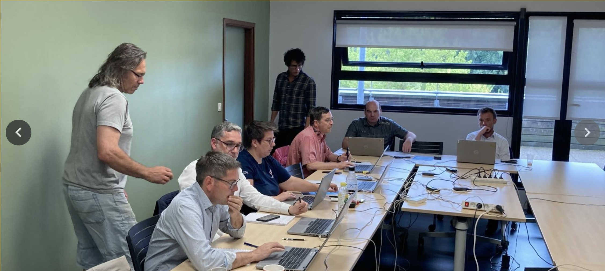
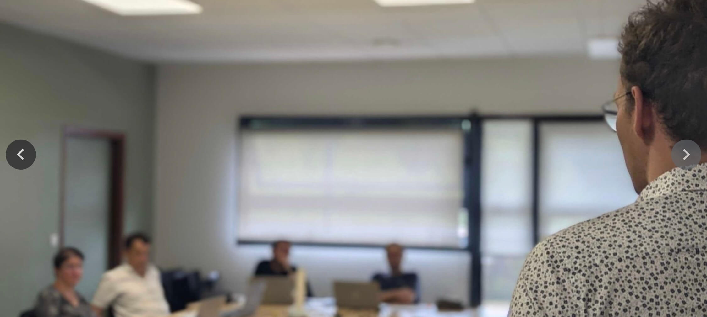
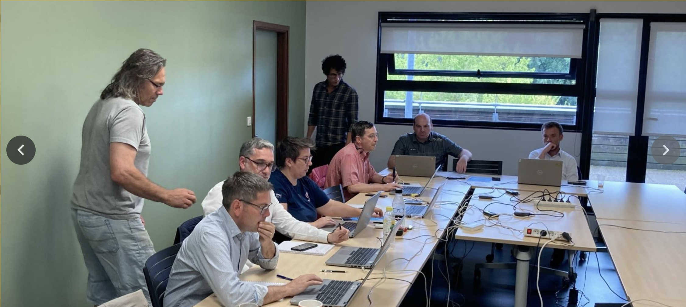
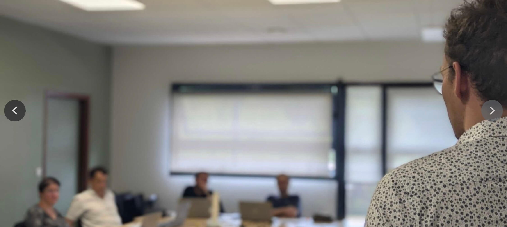

Site de l'exercice
Accueil
Comprendre l'exercice
Comprendre lexercice Résistecc
Conventions d'exercice
Rôle des joueurs
Rôle de l'observateur
Rôle de la cellule animation
Weezer pression médiatique
Déroulé de l'exercice
Boite à outil
La cellule de crise face à la cyber attaque
Organisation des cellules
La communication interne durant la crise
Les points de situation
Glossaire de la cyber
Pour aller plus loin
☰
×
Accueil
Comprendre l'exercice
Comprendre lexercice Résistecc
Conventions d'exercice
Rôle des joueurs
Rôle de l'observateur
Rôle de la cellule animation
Weezer pression médiatique
Déroulé de l'exercice
Boite à outil
La cellule de crise face à la cyber attaque
Organisation des cellules
La communication interne durant la crise
Les points de situation
Glossaire de la cyber
Pour aller plus loin
#RéSISTeCC
Bienvenue sur votre espace joueur
Cet espace vous est dédié et réunit tous les éléments qui vous permettront de comprendre l'exercice et l'environnement dans lequel vous allez évoluer pendant l'exercice.

COMPRENDRE L'EXERCICE
L'onglet
Comprendre l'exercice
vous explique l'historique de Cryptex, les conventions d'exercice, les rôles de chacun etc.
Comprendre RéSISTeCC
Convention d'exercice
Rôle des joueurs
Rôle de l'observateur
Rôle de la cellule animation
DEROULE DE L'EXERCICE
L'onglet Déroulé de l'exercice vous décrit le planning de l'exercice, du début à la fin et les détails de chaque temps forts.
BOÎTE A OUTILS
L'onglet Boite à outils regroupe tous les outils nécessaires pour structurer vos réflexions et décisions.
La cellule de crise hospitalière face à la crise cyber
Organisation des cellules
La communication interne durant la crise
Les points de situation
Glossaire de la cyber
Pour aller plus loin
 
❮
❯

 


